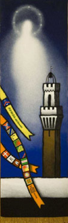

Una Selva esagerata, un Palio capace di sorprendere tutti, un popolo, quello di Vallepiatta, che torna a cantare il 'Te Deum' dopo soli tre anni di attesa. Salasso e Caro Amico hanno rivoluzionato quanto gli 'architetti' del Palio avevano costruito pazientemente a tavolino.
Un progetto perfetto che doveva portare a un risultato scontato ma invece un fantino quasi dimenticato e un cavallo sottovalutato hanno strappato il Cencio alle accoppiate da favola, regalandolo a chi non si è piegato allo strapotere.
I cavalli sono usciti dall'Entrone alla 19,10, il saluto ai monturati del palco delle comparse quindi il breve tragitto per arrivare alla mossa e il tondino in attesa della fatidica busta. Il mossiere Daniele Masala ha ricevuto il prezioso foglio di carta dal vigile urbano Giuseppe Poma e ha dato una prima occhiata all'allineamento tra i canapi. Poi nel silenzio totale della piazza ha chiamato: Drago, Aquila, Tartuca, Pantera, Bruco, Nicchio, Oca, Valdimontone e Selva di rincorsa.
Allineamento difficile a causa del duello Aquila-Pantera che è cominciato da subito al centro del canape. Veleno II ha spostato la sua Dejanirah oltre la Tartuca per trovare l'ingaggio con l'avversaria.
Inutili i richiami del mossiere e a complicare le cose ci si è poi messo il nervosismo del cavallo del Nicchio con Dè che teneva Zodiach con il posteriore rigirato verso il canape. Una situazione ingarbugliata che si è protratta per oltre quaranta minuti.
Quattro volte il mossiere ha fatto uscire i cavalli dai canapi, ma l'espediente non ha portato a nessuna soluzione, perché una volta ristabilito l'allineamento la sfida ricominciava puntuale. Nella lunga attesa anche una mossa non valida con Nicchio e Drago balzate in testa ma l'allineamento troppo distante da quello giusto ha spinto il mossiere ad azionare il mortaretto. Poi la caduta di Luigi Bruschelli: Elisir anticipa tutti ma batte nel canape ancora teso e Trecciolino finisce rovinosamente sul tufo.
Subito soccorso dai dirigenti della Tartuca e dai sanitari del 118 il fantino si rimetteva con sofferenza in piedi e poi rimontava a cavallo. Qualche istante di attesa e poi la mossa era valida. Tartuca, Aquila e Valdimontone scattavano in testa, praticamente appaiate, ma dall'esterno arrivava velocissima la Selva che prima di San Martino bruciava tutti e si portava in testa girando davanti a Tartuca, e Drago che dall'interno superava l'Aquila.
Posizioni immutate al primo Casato con il Valdimontone che consolidava la quarta posizione. Trecciolino sembrava avvicinare Salasso, ma la Selva difendeva bene la posizione. Al secondo San Martino ancora Selva, Tartuca e Drago nell'ordine, con il Valdimontone che prima del Casato riusciva a piegare la resistenza di Gingillo portandosi in terza posizione.
All'altezza della mossa Lo Zedde sorpassava anche la Tartuca e avvicinava la Selva. Salasso difendeva la testa girando primo a San Martino, resistendo nella spianata. Al Casato Lo Zedde tentava l'ultima carta, ma dall'interno arrivava fortissimo il Bruco per l'inevitabile contatto che portava alla caduta di Tittia e del Valdimontone. Per Salasso i giochi erano fatti.
(Da "La Nazione" del 17 agosto 2006)



|